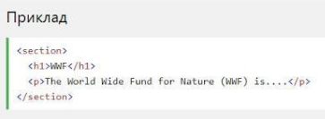
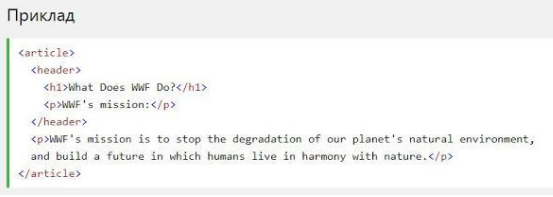
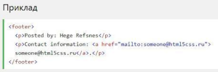

Семантичний елемент чітко описує його значення як для браузера, так і
для розробника.
Приклади не семантичних елементів: <div> і <span>- нічого не говорить про його вміст.
Приклади семантичних елементів: <form>, <table> і <article>- чітко визначає його зміст.
Підтримка браузерів
Семантичні елементи HTML5 підтримуються у всіх сучасних браузерах.
Крім того, ви можете "навчити" старих браузерів, як обробляти "невідомі елементи".
Прочитайте про це в підтримці браузера HTML5.
Нові семантичні елементи в HTML5.
HTML5 пропонує нові семантичні елементи для визначення різних частин веб-сторінки:●
<section> ●
<article> ●
<header> ●
<footer>
HTML5 <section> елемент
Елемент <section> визначає розділ в документі. Згідно з документацією в3к'с HTML5: "розділ представляє собою
тематичну угруповання контенту, зазвичай з заголовком".
Домашня сторінка зазвичай може бути розділена на розділи для
ознайомлення, змісту і контактної інформації.

HTML5 <article> елемент
Елемент <article> визначає незалежний, автономний вміст. Стаття повинна мати сенс самостійно, і вона повинна мати можливість
читати його незалежно від іншої частини веб-сайту.
Приклади того, де можна використовувати елемент
<article>: ● Повідомлення на форумі
● блозі
● Газетна стаття

HTML5 <header> елемент
Елемент <header>задає заголовок для документа або розділу. Елемент
<header>повинен використовуватися в якості контейнера для вступного змісту.
В одному документі може бути кілька елементів
<header>. У наступному прикладі визначається заголовок для статті:

HTML5 <footer> елемент
Елемент <footer>вказує нижній колонтитул для документа або розділу. Нижній колонтитул зазвичай містить автора документа, інформацію про
авторське право, посилання на умови використання, контактні дані і т.д.
В одному документі може бути кілька елементів
<footer>. 